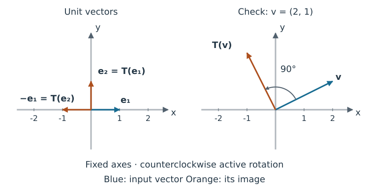
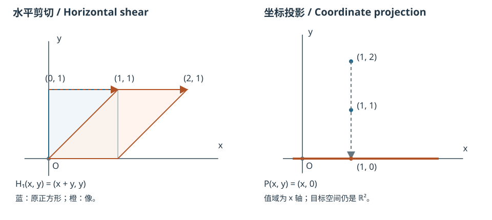
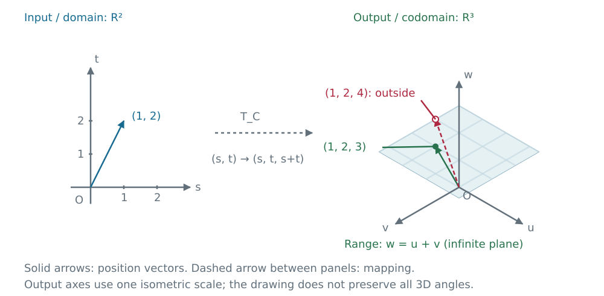

线性变换与矩阵表示
Linear Transformations and Matrix Representations
教材对应： §1.8（线性变换简介）、§1.9（线性变换的矩阵）。 对应范围见部分总览。
从方程到输入与输出 From Equations to Inputs and Outputs
矩阵方程 既可以问“给定 ，求输入 ”，也可以先固定规则 ，观察每个输入的输出。线性变换把前面的几个问题联系起来：哪些目标能到达、是否可能有多个输入到达同一目标、怎样描述那些输入。
前页讨论了一个可表示向量的系数是否唯一。现在固定整个规则，考察所有输入与输出。本页先解释映射与线性，再由单位向量的像构造矩阵、理解几何作用，最后用单射与满射统一唯一性与存在性。
映射（mapping） 为每个输入 指定唯一输出 。 是定义域（domain），指定的 是陪域（目标空间，codomain），所有实际输出组成值域（range）。值域可以只是目标空间的一部分。 叫输入的像（image）。
每个输入必须有一个确定输出；这与“每个输出是否只来自一个输入”是两个问题。对实矩阵 ，记 ，则
这是教材§1.8“值域由所有列的线性组合组成”的说法，用此前的列空间记号重述。目标 属于值域，恰好意味着存在以它为像的输入，即 有解。
线性要求保持加法和数乘 Linearity Preserves Addition and Scaling
映射 是线性变换（linear transformation），指对任意输入 和实数 ，
这两条合起来给 ，并能反复用于有限个向量的组合。少量数值测试不能证明“任意”成立，但一个失败例子就能否定线性。
矩阵映射 满足两性质：按矩阵向量乘法的列组合定义， 可分成两项，。解集关系已据此使用分配规律，这里把它统一表述为线性性质。
行操作也是线性规则的一个来源；下一主题将从分量运算验证它，并用标准单位向量的像构造矩阵。
叠加原理 Superposition Principle
若 线性，对任意正整数 、向量 与实数 ， 理由是先反复用加法保持性拆开有限项之和，再对每项用数乘保持性提出 ；两项情形就是 。教材§1.8将这个联系称为叠加原理：在线性模型适用时，组合输入信号的响应等于各输入响应的同系数组合。它不表示所有物理系统都线性。
零输入给零输出：必要而不充分 Zero Maps to Zero: Necessary but Not Sufficient
在线性定义中取 ，得到 。输入与输出的零向量分别属于各自空间。
动笔辨别。 与 是否线性？先算零输入，再为不能靠零输入排除的映射找一个失败的数乘关系。
提示（hint）
对 比较 与 。
答案与反馈（answer and feedback）
，故平移 非线性。，但 ，，不相等，故也非线性。满足 不能取代两条线性性质。
解集页的平移也是如此： 在 时将零送到 ，故不线性。它是仿射映射（affine map）的一个例子；这里“仿射”指线性规则之后再加一个固定向量。平移解集时坐标轴保持固定。
标准单位向量的像决定矩阵 Images of Standard Unit Vectors Determine the Matrix
中第 个分量为 、其他分量为 的向量叫标准单位向量（standard unit vector），记作 。例如在 中，、。
教材§1.9，定理10：线性变换的唯一标准矩阵 / The Standard Matrix of a Linear Transformation
设 是线性变换（linear transformation）。存在唯一的 实矩阵 ，使每个 都满足 。 若 是 的第 列，即第 个标准单位向量，则
构造与唯一性的理由。 定理中的矩阵 在以下推导记作 。任意输入有逐分量恒等式
若 线性，便有
矩阵 叫 的标准矩阵（standard matrix）。输入空间有 个标准单位向量，它们的像决定 列；每个像属于输出空间，含 个分量，所以有 行，尺寸为 。这里是从线性和具体坐标展开推出矩阵表示，没有预设任意映射都能这样表示。
这个矩阵还唯一：若另一个矩阵也表示 ，代入 就选出它的第 列，必须等于 。
再辨别线性前提 / Check the Linearity Assumption. 前面的 在 上的像与恒等映射相同。它们是否因此是同一个映射？
答案与反馈 / Answer and Feedback
不是。。这也就是前面的数乘反例：零送到零不足以保证线性，知道单位向量的像也不足以确定任意映射。只有已经确认线性，才能用定理10从这些像确定整个变换。
常见几何线性变换 Common Geometric Linear Transformations
怎样由几何规则构造矩阵，再由矩阵判断目标能否得到、输入是否唯一？以下主动变换（active transformation）移动向量，坐标轴保持固定。每例先确认线性，再排列单位向量的像，最后用任意输入核对。
逆时针90度旋转 A 90-Degree Counterclockwise Rotation
在固定坐标轴上，逆时针旋转 的规则是 对两个输入相加，规则给 对实数 ，。因此它线性，可以用定理10构造标准矩阵：
任意输入都有 ，恰好是原规则。动笔核对 / Check by Calculation. 用列组合计算 的像： 像的长度仍为 。对于任意目标 ，方程 给出唯一输入 ；所以值域是整个 ，且 。

一般角度的平面旋转 Planar Rotation through a General Angle
将向量绕原点旋转角度 ，正角按逆时针方向。单位向量 的像与正横轴成 角，故坐标为 ； 的像与正横轴成 角，故为 。旋转保持平行四边形的向量加法构图，也保持实数数乘，因此是线性变换。由两列得到 对任意输入，列组合给 也可直接用三角加法公式检查：非零输入写成 ，结果就是 ；零向量仍为零。这验证了任意输入的旋转方向与矩阵符号。
对一般旋转，反向转过 可恢复输入。也可用上面的坐标式核对：目标 的唯一输入为 。因此值域仍为整个平面，零输出只来自零输入；这里用的是具体旋转规则。
消元对应的剪切 A Shear Corresponding to Elimination
考虑 ，规则为 。横坐标不变，竖直位移为 ，所以这是竖直剪切（vertical shear）。两个输出分量都是输入分量的线性组合，逐分量分配可验证加法与实数数乘保持，故 线性。
对任意输入，。这就是下表的 ，也就是行操作 对增广矩阵每一列，包括常数列施加的规则。
动笔核对 / Check by Calculation. 用坐标 书写时，这条规则就是 。先自己核对 的像，再问任意目标 能否得到。
计算反馈 / Calculation Feedback
，与矩阵列组合 一致。
任意目标 的唯一输入为 ，因为撤销规则是 所以 ，。线性性把原来的线性组合关系传递给各列的像；能够撤销，保证反向恢复关系，不会增加额外关系。
对 个方程、 个未知数的系统，行操作作用于列向量和常数向量所在的输出空间 ；未知向量 仍在输入空间 ，其坐标没有重新定义。完整的 逐列记号与保解推导见初等行变换对应的矩阵。
向x轴投影 Projection onto the x-Axis
指定 ，。保留第一分量、把第二分量置零的规则保持加法与实数数乘，因此线性。标准单位向量的像是 第二列为零，是因为整个竖直单位方向被送到零。任意输入给 ，由此得到
目标 的全部输入是 ，；目标 没有输入。列空间描述哪些目标可以得到；零空间描述哪些输入差别不会改变输出。 此处值域是 轴，陪域仍为整个 ，二者不能混同。

图中投影使用另一个目标 ，展示 与 的共同像，规则与上面完全相同；左图是水平剪切，勿与 的竖直剪切混淆。此处只讨论坐标投影，不使用一般正交投影或最小二乘理论。
几何规则与矩阵对照 Geometric Rules and Their Matrices
以下均指定 ，坐标轴固定。第二栏中的两个像依次组成标准矩阵的第一、第二列（教材§1.8–1.9）。
| 几何规则 / Rule | 与标准矩阵 / Images and matrix | 主要效果 / Effect |
|---|---|---|
| 逆时针旋转 / Counterclockwise rotation，角度 | 、； | 绕固定原点旋转；正角逆时针，负角顺时针 |
| 关于 轴反射 / Reflection， | 、； | 横坐标不变，纵坐标变号 |
| 水平收缩/伸长 / Horizontal contraction/expansion，， | 、； | 水平收缩， 水平伸长； 不变 |
| 水平剪切 / Horizontal shear，， | 、； | 纵坐标不变，水平位移为 ， 轴上的点不动 |
| 竖直剪切 / Vertical shear，， | 、； | 横坐标不变，竖直位移为 ， 轴上的点不动 |
| 到 轴的坐标投影 / Coordinate projection， | 、； | 舍去纵坐标；值域是 轴，多个输入可有同一输出 |
表中的反射、伸缩、剪切和投影都可逐分量验证线性，再求单位向量的像。对任意 ，按列计算所得恰好是给定规则；例如水平剪切给 对每列施加 ，是竖直剪切 ； 才是水平剪切 。 时都是恒等规则。
短练习 / Short Practice. 不先套表，求关于 轴反射和竖直伸缩 （）的单位向量像与矩阵。
答案与反馈 / Answer and Feedback
关于 轴反射的矩阵为 ，竖直伸缩为 ；它们分别把单位向量送到 和 。
从R²到R³ From R² to R³
再看已在线性无关主题出现的规则 每个输出分量都是输入分量的线性组合，因而保持加法与数乘。输入空间只有两个标准单位向量，它们各有一个三分量的像： 所以标准矩阵是 ，且任意 都有 。输出满足第三分量等于前两分量之和；反过来，每个满足此条件的目标 都来自 。因此
值域是三维陪域中一个过原点的平面，并非整个 。输出前两个分量可唯一恢复输入，特别地 。目标 有唯一输入 ；目标 不在值域，没有输入。

从R³提取两个坐标 Extracting Two Coordinates from R³
现在指定 ，。提取前两个分量保持加法与数乘，故线性。三个标准单位向量的像依次是 、、，所以 任意输入给 ；任意目标 的全部输入为 ，。因此
这与指定为 的 不同：后者的标准矩阵为 ，值域为 平面，只占三维陪域的一部分。讨论“是否达到所有目标”，必须同时说明陪域。
接着独立把同样的方法用于另一个矩形标准矩阵。
独立练习：矩形标准矩阵 Independent Practice: A Rectangular Standard Matrix
独立练习。 对 ，
求 、 与标准矩阵。分别用直接代入和矩阵列组合求输入 的像，并说明此规则为什么线性。
提示（hint）
两次单位输入的输出应各有三个分量。把它们排为两列，不能排为两行。
完整答案（complete answer）
直接代入得到 ；矩阵表示给
对任意 ，上述列组合为 ，因此规则就是矩阵映射，满足线性两性质。标准矩阵是 ；输入两个分量，输出三个分量。
单射与满射分别回答什么？ What Do Injectivity and Surjectivity Tell Us?
单射（one-to-one / injective）指不同输入不能得到相同输出。等价地， 必须推出 。它允许一些目标没有原像，只要求每个目标至多对应一个输入。
满射（onto / surjective）指目标空间中每个向量都可达到，即每个目标至少有一个输入。必须说清目标空间；把目标空间改小，会改变是否满射的判断。
用这两个名称简短回访：旋转与 对每个目标恰有一个输入，都是单射且满射，即双射（bijective）； 既不单射，也不是到指定陪域 的满射； 是单射，但不是到 的满射； 是到 的满射，但不是单射。理由正是前面分别求出的值域和同一目标的全部输入。
两个熟悉的矩形矩阵 Two Familiar Rectangular Matrices
记 ，并回访前面构造的 。先动笔判断两者的单射/满射，并各给计算证据。 可用小矩阵的任意目标计算、齐次方向、线性无关与表示的唯一性；不必从头消元。
答案与反馈（answer and feedback）
满射但非单射。对任意 ，输入 给出该目标，故满射。非零输入 与零输入都给零输出，故非单射；也可比较 与 的输出。
单射但非满射。若 ，前两个分量立即给 ，故单射；目标 无原像，故不是到指定陪域 的满射。值域仍是平面 。
沿用小矩阵 ，这次用同一输出的多个输入观察非单射。蓝、橙线上的点分别给零输出与同一非零输出；每个输入向量仍从固定原点表示。静态图及完整约定见解集平移。
沿解直线移动 / Move Along the Solution Lines. 拖动 t 或用按钮比较解点；位置箭头从固定 O 出发，灰虚箭头表示加上 xₚ 的位移。t=0 时重合的灰箭头省去。图示约定 / Diagram conventions。
左侧为输入 R³ 的投影，右侧为输出 R²。滑块仅取样 −1≤t≤1，完整解的参数仍取遍全体实数。
单射为什么只需检查零输出？ Why Does Injectivity Reduce to the Zero Output?
教材§1.9，定理11：单射与零核等价 / Injectivity and the Zero Kernel
设 线性。 为单射（one-to-one / injective），当且仅当方程 只有平凡解 。 单射指不同输入有不同输出，等价于每个输出至多有一个原像。
若单射， 推出 。反过来，若只有零输入得到零输出，当 时，线性给 ，于是 。这里“相减”一步正是线性发挥作用的地方。
列无关、齐次仅零解、每列主元的联系来自线性无关主题；满射与每行主元的双向理由见主元判据。不能把“某个目标有唯一解”当作一般映射的满射定义。
教材§1.9，定理12：单满射的列向量判据 / Onto and One-to-One Matrix Transformations
设 线性，标准矩阵为 。则：
映满 （onto / surjective），当且仅当 的列向量张成 。
是单射，当且仅当 的列向量线性无关。
条件与判据的理由 Reasons for the Criteria
定理11把单射化为齐次仅零解，再由线性无关的定义得到定理12(b)；定理12(a)则是“任意目标可由列组合得到”的同义表述。下表汇总这些已经建立的联系，只适用于线性映射 ， 为实 矩阵。
| 问题 / Question | 方程/列组合 / Equations and Columns | 消元依据 / Pivot Criterion |
|---|---|---|
| 给定 是否有输入？ | 增广矩阵化为阶梯形后，没有矛盾行 | |
| 是否单射？ | 仅零解；列无关；每个可达目标表示唯一 | 系数矩阵每列有主元，无自由变量 |
| 是否为到 的满射？ | 每个 都有解；列张成 | 系数矩阵每行有主元 |
最后回看消元：变换规则与它的矩阵 Revisiting Elimination: A Rule and Its Matrix
一般矩阵 的规则 把输入系数送到输出。行操作则在输出空间 对各列及右端施加同一个线性且可撤销的规则。它的标准矩阵是什么，为什么全部解不变？初等行变换对应的矩阵从三种熟悉操作逐步回答。
线性保留组合关系，可逆性保证反向 Linearity Preserves Combinations; Reversibility Gives Equivalence
线性性允许把对列组合的作用分配到各列；撤销操作允许从新等式回到原等式。完整双向推导与不可逆对照接着说明这两个条件各负责什么。
用矩阵表示这一步行操作 Representing This Row Operation by a Matrix
对 ，对应矩阵为 。逐列计算及右端同步仍使用熟悉的三未知数小例；仍沿用记号 。
结束检查与后续主题 Check Your Understanding and Continue
书写：对 矩阵，原规则 与消元规则分别在哪两个空间之间作用？为什么等价式能反向成立？口头用 对照单射和满射。
检查答案（exit feedback）
；消元规则 作用于所有列及右端。具体撤销规则恢复原输出等式，所以使列组合等于相应常数向量的所有输入完全相同。下一页的二维输出例将用一个初等矩阵表示它。贯穿例 满非单、 单非满。
接着读初等行变换对应的矩阵 / Matrices for Elementary Row Operations，再进入第一部分综合复习 / Part 1 Review Problems，用一个新系统检验你能否从方程、行图像、列组合、解集与映射五种角度解释同一问题。共享术语表。
上一主题：线性无关与表示的唯一性 / Previous: Linear Independence and Uniqueness of Representation · 下一主题：初等行变换对应的矩阵 / Next: Matrices for Elementary Row Operations
从一个输入走向多列输入，可继续阅读第二部分的矩阵运算 / Matrix Operations；具体撤销规则怎样成为矩阵语言，见逆矩阵与逆变换 / Inverse Matrices and Inverse Transformations。